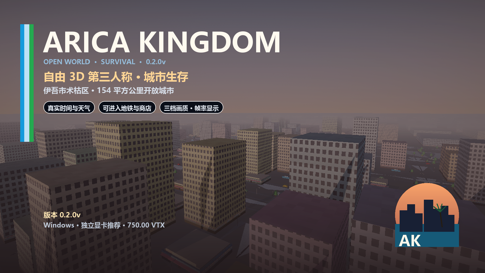

Arica Kingdom
版本 0.3.2v
Windows
开放世界 · 生存
3D 第三人称
自由 3D 第三人称城市生存游戏。154 平方公里开放城市「伊吾市术枯区」，走进可进入的商店与地铁，在真实时间与真实天气下打工、买房、活下去。
750.00VTX
数字版下载 · Windows
🌴Arica Kingdom封面图 images/arica-kingdom.png 上传后自动显示

游戏特色
- 1154 km² 伊吾市术枯区：一整片开放城市，街区、道路与建筑都可自由步行到达。
- 2真实时间与真实天气：昼夜与世界时间同步，晴天、雨天、夜色都会影响你的行动。
- 3可进入的商店与地铁 1 号线：推门进店购物，或在站台等一班地铁穿城。
- 4血量与饱食度生存：会饿、会受伤，需要吃饭与休息才能继续走下去。
- 5打工与买房：找份工作攒钱，最后在这座城市里买下属于自己的房子。
- 6低 / 中 / 顶配三档画质：按机器性能切换，左上角实时显示帧率。
DLC
| 内容 | 价格 |
|---|---|
| 光影同捆包省 10.00 含「光追」与「影子支持」 |
200.00 VTX210.00 |
| Arica Kingdom 光追 实时反射与更高质量光照 |
200.00 VTX |
| Arica Kingdom 影子支持 动态阴影与接触阴影 |
10.00 VTX |
以上 DLC 内容也可以在游戏内的商店里直接购买；两处内容相同，择一购买即可。
运行环境：Windows · 版本 0.3.2v · 下载文件：downloads/games/AricaKingdom.exe。若下载按钮暂时返回 404，说明游戏包尚未上传到该路径，稍后再试。